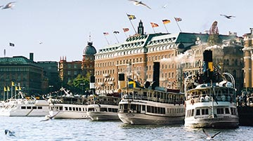
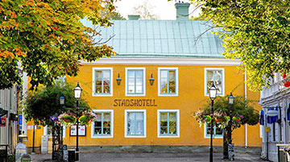
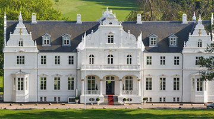
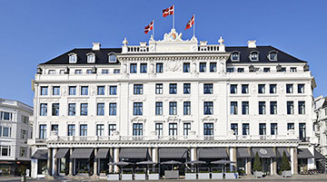

Lodging:

Grand Hôtel Stockholm , Stockholm, 1 night
Savor superb waterfront views at this historic property perched at the edge of the harbor,
overlooking Stockholm's old town and widely praised as one of Scandinavia's leading luxury hotels.
Condé Nast Traveler Gold List. (pool, spa)

Trosa Stadshotell & Spa , Trosa, 1 night
Located in the town square of Trosa, an idyllic little seaside town in Sörmland, this newly renovated
family-owned hotel with contemporary stylish charm features a lovely courtyard and elegant dining room.
(spa)

Kokkedal Slot Copenhagen, Horsholm, 2 nights
Set on a stunning stretch of coastline and surrounded by acres of green parkland, beaches and a
golf course, this hotel's main building is a 1746 Renaissance castle complete with crystal chandeliers,
gilded mirrors and an underground passage linking to its old castle lodge. A member of Small Luxury
Hotels of the World. (pool, spa)

Hotel d'Angleterre Copenhagen , Copenhagen, 1 night
This renovated 18th-century landmark hotel—set majestically in the heart of Copenhagen—will
dazzle you with its elegance and style, as well as its rich history. Condé Nast Traveler Gold List.
(pool, spa)
A Variety of Routes Each Day
In Sweden and Denmark you head off each morning after choosing among several expertly designed routes—
all with detailed directions, mileage and shuttle options. Unlike trips with one fixed daily route
(or worse, one guide that everyone's obliged to follow), you're free to enjoy the best of the region at
your pace, stopping wherever you want to explore further.
The Best Leaders in Sweden and Denmark
Acme Adventure Travel has the best-qualified people to lead your trip in Sweden and Denmark, and our
guests back that up, rating our Trip Leaders an average of 9.75 out of 10 for all-around quality of
performance. Get the facts (and no fluff) on how we recruit and develop the very best people for your
trip.
Great Bikes Included
Our custom-designed titanium bikes are best in class. From avid cyclists to easygoing riders, we believe
that everyone deserves a seriously great bike to match their riding style. Learn more about our bike
fleet.
Navigate Your Way in Sweden and Denmark
Your ride comes equipped with a GPS device, preloaded with all the routes and route options for your
trip. If you prefer to bring your own device, we also have downloadable GPS files and of course, our
good old paper directions are always available. Read more on why our navigation options are the best.
Plenty of Kids on Your Trip
It may be hard to imagine being on a family trip with no other families on it—but it happens regularly
with some companies. On a Acme Adventure Travel Family Adventure there are typically several families on
each departure, creating more opportunities for your kids to make new friends as they try fun things
together – which is a big part of the experience.
Leaders Focused on Families
When everyone's together, there's lots going on; and when kids' and adults' priorities diverge, it can
seem like two different trips. That's why our Family Adventures in Sweden and Denmark have three Trip
Leaders—including a dedicated Kids Activity Expert who regularly takes younger travelers off to do their
own thing. Other companies try to get by with two leaders; we step up and do it right. For more on our
family focus, check this out.
Everyone at Their Own Pace
We design and support our Sweden and Denmark trips to suit mixed abilities and varied interests—so you
can set your own pace, then change things up as the day unfolds. And all guests are free to do the same,
traveling together or apart, with no one cramping anyone else's style. Which sounds easy in theory, but
it's hard to pull off. Here's more on how we do it.
In Europe Since 1988
Acme Adventure Travel has been welcoming active travelers to Europe since before the Berlin Wall came
down. Today it's virtually our second home. We know the perfect roads and trails, the most scenic
valleys and hilltop towns, the hidden churches and gem-like museums, the up-and-coming vintners and
celebrated chefs—and, of course, all the best places to stay.
A Second Van When You Need It
Acme Adventure Travel is the only active travel company providing two support vans in Sweden and
Denmark—because we know it's essential to ensure a truly great travel experience. It doubles our ability
to be there when you need us to offer hydration, lighten your load or give you a lift if it's time to
take a break. Read more on why two vans make all the difference.
Like You, We're Family Experts
At Acme Adventure Travel we've honed our expertise in active family travel over many years and a lot of
trips. We host at least 20 times more family guests than any other active company, so we're constantly
gaining new insights that make our trips even better. Detailed planning, behind-the scenes logistics,
unrivaled support from three Trip Leaders—all backed by a team that proudly creates the kind of
experiences we'd want to share with our own families.
Only the Best Hotels
On this trip featuring Premiere Hotels, you can count on the best lodgings Sweden and Denmark has to
offer. In fact, the hotels we've chosen in this region have higher retail room rates than those offered
by any other active travel company—even when their trips cost more.
Your Trip Will Run. Period.
Under our Book with Confidence policy, your Acme Adventure Travel trip will run even for a single
family of three or four people, subject to a nominal extra fee. Or transfer to another trip, and we'll
give you a credit. It's all part of our trademark commitment to treating guests with integrity,
transparency and total accountability. Read all the details.